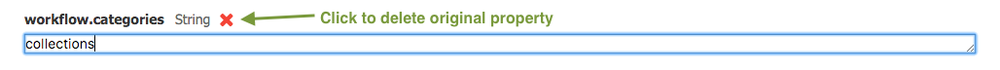
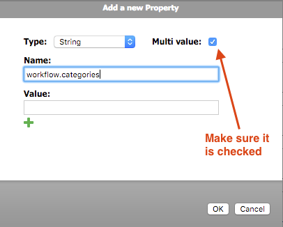

Advanced Search Taxonomy Workflow Plugin

Configuration
This page describes how to add taxonomy workflow to advanced search perspective. In short, you need to take the following steps.
- Prerequisites: You must already have enabled taxonomy in one or more document types, and have set up a taxonomy category
- Step 1: Set your taxonomy name to the /hippo:configuration/hippo:workflows/collection-taxonomy/collections/frontend:renderer configutation
- Step 2: Add the 'collection-taxonomy' category to the /hippo:configuration/hippo:frontend/cms/cms-advanced-search/workflowPlugin configuration
Step 0: Requirements
Make sure you have enabled the Taxonomy Plugin and configured it correctly.
Make sure you have enabled the Advanced Search Perspective.
Make sure you add the taxonomy workflow dependency in your cms project's pom.xml. If this is not the case see the Installation page.
Step 1: Set your taxonomy category name in the plugin configuration
To be able to use this plugin you must first set your taxonomy's name in the configuration. In this documentation we will use the taxonomy name 'Priority' that we already set up in the demo project.
- Open your project's console, for example http://localhost:8080/cms/console
- Navigate to /hippo:configuration/hippo:workflows/collection-taxonomy/collections/frontend:renderer node, and fill your taxonomy's name ('Priority' for example) in taxonomy.name property
- Don't forget to save your changes by clicking 'Write changes to repository' button!
Step 2: Add new workflow category to advanced search configuration
To enable the taxonomy workflow in advanced search you need to add the new workflow category to its configuration
- In your project's console, Navigate to /hippo:configuration/hippo:frontend/cms/cms-advanced-search/workflowPlugin node
-
If the property workflow.categories does not allow multiple values, you will have to write down the current value, delete the property and recreate it with 'Multi value' checkbox enabled, and then add the old value.
  - Add a new value field to workflow.categories and fill in with the value 'collection-taxonomy'.
- Save your changes.